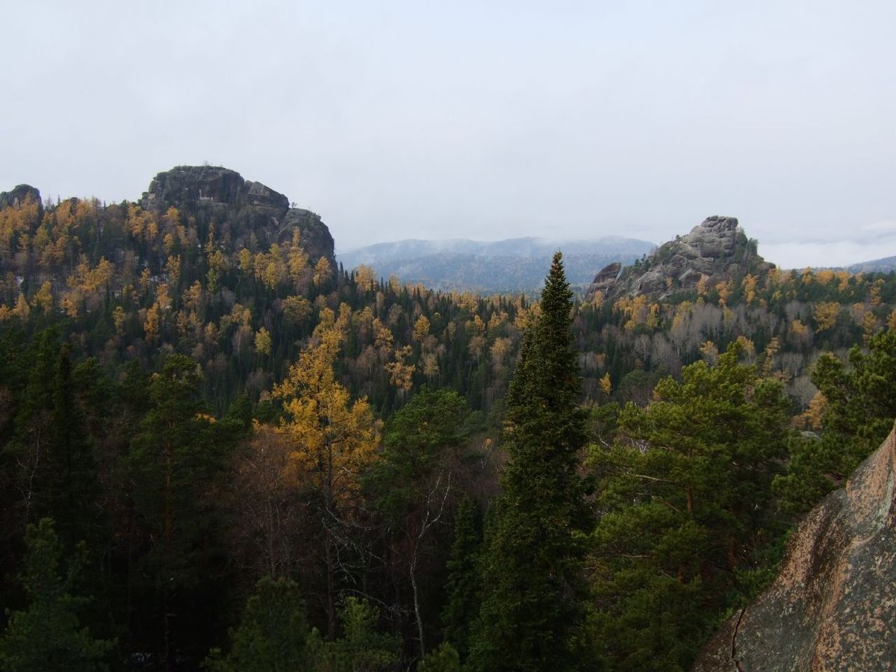

В заповеднике «Столбы» впервые за 15 лет зафиксировали семью рысей!
Сотрудники Красноярского заповедника «Столбы» поделились радостной новостью: фотоловушки запечатлели редкую гостью — рысь с двумя подросшими котятами. Это первое подтверждение размножения вида на территории заповедника за последние 15 лет.
Специалисты отмечают, что появление потомства говорит о стабильности местной экосистемы и достаточном количестве кормовой базы. Взрослые особи выглядят здоровыми, а котята уверенно следуют за матерью, осваивая охотничьи навыки.
Учёные продолжат наблюдение с помощью камер, чтобы собрать данные о поведении семейства и оценить перспективы роста популяции рысей в регионе.
Хотите, продолжу тему или подготовлю новость на другую тематику?
